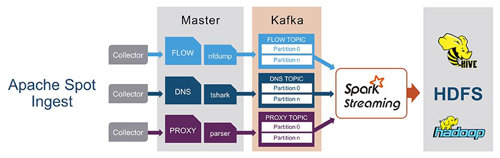

Apache Spot Ingestion
Apache Spot overcomes the challenge of how to enhance data collection from different sources when most of the time our collectors are sending thousands of events per second overflowing available server resources (CPU, memory). With Spot, you can ensure service availability near to 100% without losing data. Spot enables a faster, scalable and distributed service when required. Because of its distributed architecture, data loss does not occur when data queuing on the data node that is executing the collector daemon when peak workloads crashes the process. This architecture ensures availability near 99.99999%, without losing information in the effort.

Inside the Ingest
Spot-Collectors
Daemons running in the background monitor/collect from file system paths. Collectors detect new files generated by network tools or data generated previously and left in the path for its collection. Collectors then translate this data into a human-readable format by using dissection tools, such as nfdump and tshark.
Once the data is transformed, collectors store the data in HDFS with the original format (for forensics) and in Hive, in Avro-parquet format, so the data can be accessible by SQL queries.
Once a file has been uploaded there two paths are available.
- Data size > 1mb: File name and location in HDFS is sent to Kafka.
- Data size < 1mb: the data event is sent to Kafka to be processed with Spark Streaming.
Kafka
A new topic is created for each instance of the ingest process. Partitions are defined by the number of Spot Workers in the ingest. Kafka stores data sent by the collectors, so the Spot Workers can parse the data.
Spot Workers
Just like the collectors, Spot Workers are daemons running in the background subscribed to a specific Kafka topic and partition. The Spot Workers read, parse and store the data in a specific Hive tables that will be consumed by the machine learning algorithm later.
Currently there are two types of Spot Workers.
- Python workers use multithreading to process data with the defined parsers.
- Spark-Streaming workers execute a Spark application to read data from Kafka, using spark-streaming context (micro batching).